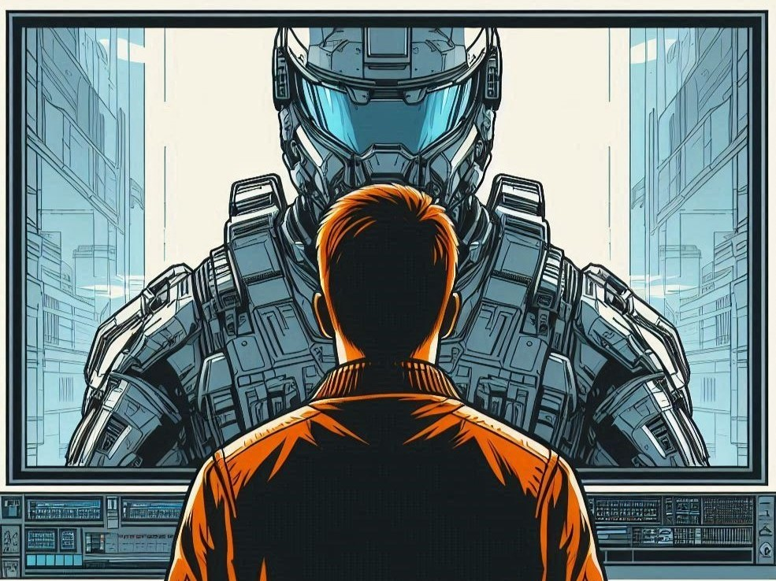

You are the pilot of a severely damaged, light freighter spaceship.
Your ship is approaching the only space station in range.
You have only 10 minutes of life support and only enough fuel for one last maneuver.
Your ship's distress beacon is broadcasting away at the star system on all emergency channels.
You have one shot, and you need the station to help you.
You open a communication channel with the spaceport's duty COMMS OFFICER.

NEXT PAGE